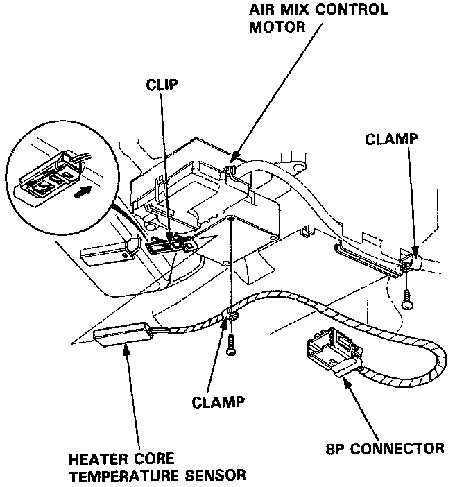

Heater Core Temperature Sensor / Switch: Service and Repair
1. Remove the glove box lower panel. Service and Repair
2. Disconnect the 8P connector.
3. Remove the screws from the harness clamps, then pull the retaining clip out of the slot that the sensor sits in and remove the heater core temperature sensor.